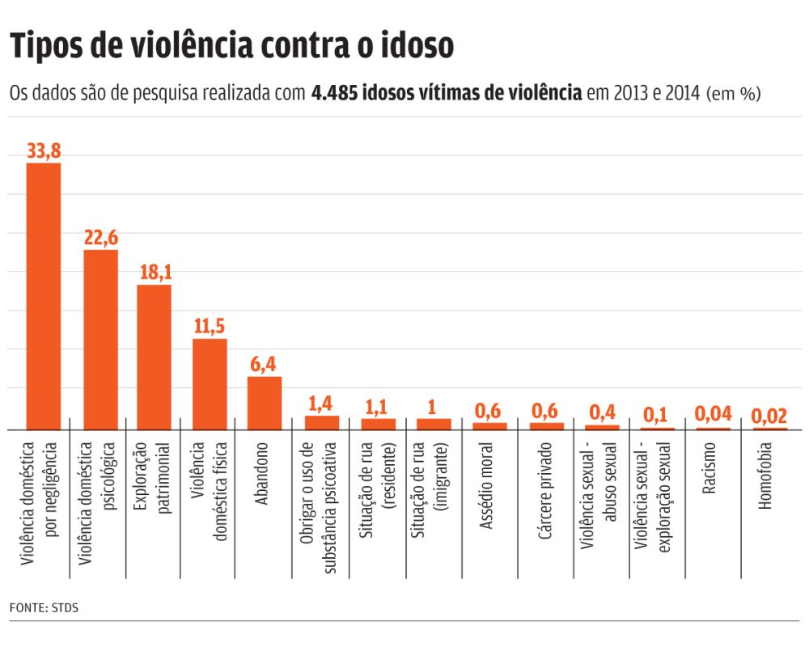

Campanha
CONCEITOS
Violência Física
É o uso da força física para compelir os idosos a fazerem o que não desejam, para feri-los, provocar dor, incapacidade ou morte.
Violência Psicológica
Corresponde a agressões verbais ou gestuais como objetivo de aterrorizar, humilhar, restringir a liberdade ou isolar do convívio social.
Violência Sexual
Refere-se ao ato ou jogo sexual de caráter homo ou hetero-relacional, utilizando pessoas idosas. Esses abusos visam a obter excitação, relação sexual ou práticas eróticas por meio de aliciamento, violência física ou ameaças.
Violência de Abandono
É uma de violência que se manifesta pela ausência ou deserção dos responsáveis governamentais, institucionais ou familiares de prestaremos corro a uma pessoa idosa que necessite de proteção e assistência.
Violência Negligencial
Refere-se à recusa ou à omissão de cuidados devidos e necessários aos idosos por parte dos responsáveis familiares ou institucionais. A negligência é uma das formas de violência mais presente no país ela se manifesta, frequentemente, associada a outros abusos que geram lesões e Traumas físicos, emocionais e sociais, em particular, para as que se encontram em situação de múltipla dependência ou incapacidade.
Violência Financeira
Consiste na exploração imprópria ou ilegal ou ao uso não consentido pela pessoa idosa de seus recursos financeiros e patrimoniais.
Violência Emocional
Refere-se à agressão verbal crônica, incluindo palavras depreciativas que possam desrespeitar a identidade, dignidade e autoestima. Caracteriza-se pela falta de respeito à intimidade; falta de respeito aos desejos, negação do acesso a amizades, desatenção a necessidades sociais e de saúde
Estatuto do Idoso
Art. 1º: É instituído o Estatuto do Idoso, destinado a regular os direitos assegurados às pessoas com idade igual ou superior a 60 (sessenta) anos.
Art. 2º: O idoso goza de todos os direitos fundamentais inerentes à pessoa humana, sem prejuízo da proteção integral de que trata esta Lei, assegurando-se-lhe, por lei ou por outros meios, todas as oportunidades e facilidades, para preservação de sua saúde física e mental e seu aperfeiçoamento moral, intelectual, espiritual e social, em condições de liberdade e dignidade.
Art. 3º: É obrigação da família, da comunidade, da sociedade e do Poder Público assegurar ao idoso, com absoluta prioridade, a efetivação do direito à vida, à saúde, à alimentação, à educação, à cultura, ao esporte, ao lazer, ao trabalho, à cidadania, à liberdade, à dignidade, ao respeito e à convivência familiar e comunitária.
Art. 4º: Nenhum idoso será objeto de qualquer tipo de negligência, discriminação, violência, crueldade ou opressão, e todo atentado aos seus direitos, por ação ou omissão, será punido na forma da lei.
Art. 5º: A inobservância das normas de prevenção importará em responsabilidade à pessoa física ou jurídica nos termos da lei.
Art. 6º: Todo cidadão tem o dever de comunicar à autoridade competente qualquer forma de violação a esta Lei que tenha testemunhado ou de que tenha conhecimento.
Art. 7º: Os Conselhos Nacional, Estaduais, do Distrito Federal e Municipais do Idoso, previstos na Lei no 8.842, de 4 de janeiro de 1994, zelarão pelo cumprimento dos direitos do idoso, definidos nesta Lei.
Políticas Públicas
Com o aumento do envelhecimento da população mundial na década de 80, o problema de abuso e maus-tratos a idosos começou a ter um grande aumento. Este problema está cada vez mais se tornando comuns em diferentes culturas ao redor do mundo, e a realidade que o Brasil traz é aterrorizante com constantes casos de violência contra o idoso mesmo tendo uma legislação com diversas leis protetivas, estas leis não estão sendo cumpridas fazendo com que homens e mulheres idoso continuem sendo vulneráveis aos maus-tratos.
As políticas públicas realizadas pelo governo não estão conseguindo afirmar os direitos das pessoas idosas e sua proteção diante a lei, que tentam prevenir os maus tratos familiar e institucionais, tornando-se apenas paliativa.
A Lei Nº 8.842, de 04 de janeiro de 1994, aponta sobre a Política Nacional do Idoso, cria o Conselho Nacional do Idoso que tem por objetivo garantir os direitos sociais do idoso, criando condições que promovam a autonomia, integração e participação ativa na sociedade. Considera-se idosa a pessoa com idade igual ou superior a 60 anos. Essa política institui em seus artigos direitos inerentes a pessoa idosa e acesso a serviços prestados pelo Estado na área da assistência, saúde educação, habitação e urbanismo, justiça, cultura, lazer e esporte.
O Estatuto do Idoso (2004), em seu Artigo 18, no Capítulo IV do direito à saúde, diz: “As instituições de saúde devem atender aos critérios mínimos para o atendimento às necessidades do idoso, promovendo o treinamento e a capacitação dos profissionais, assim como orientação a cuidadores, familiares e grupos de auto ajuda”. Contudo o idoso tem como direito o atendimento preferencial no Sistema Único de Saúde (SUS), possui o direito de ganhar sem custos próteses, órteses e a remédios, principalmente para doenças crônicas. Os planos de saúde não podem realizar reajustes nas mensalidades usufruindo como critério à idade. O idoso possui o direito de ter um(a) acompanhante ao permanecer internado por tempo determinado pelo profissional de saúde que o atende.
O idoso não pode sofrer com violência sendo esta física ou psíquica, ser vítima de abandono, discriminação entre outras formas de violência. Quem impedir a entrada do idoso no ônibus, dificultar a seu acesso a contas bancárias ou outra forma, ceifando o idoso de exercer a sua cidadania, poderá ser responsabilizado perante o estatuto, e no caso de maus tratos também à penalidade prevista. As instituições que praticarem também maus tratos deixando os idosos de forma sub-humana poderão ser responsabilizados perante a lei, estarão sujeitas também à advertência, multa, suspensão parcial ou total do repasse de verbas públicas, interdição de unidade ou suspensão de programa e proibição de atendimento a idosos.
As políticas públicas previstas na legislação, mostram a necessidade de melhoria dos serviços e apresentam que as muitas alternativas propostas, e os projetos apresentados à pessoa idosa, seguem esperando a prática . Esta ausência de políticas públicas vem se unir às diversas formas de violência que têm lugar no âmbito doméstico. Diversos autores lembram que a conduta negligente, longe de ser vista como resultado da falta de atenção individual, merece ser interpretada como produto da carência de instituições que promovam serviços adequados para a velhice e/ou supervisão adequada de atenção e cuidados aos velhos em suas próprias casas ou na de seus familiares (Feldman, 1993).
Ações do Estado
Ministério da Mulher, da Família e dos Direitos Humano (MMFDH), por meio da Secretaria Nacional de Promoção e Defesa dos Direitos da Pessoa Idosa (SNDPI), lançou nesta segunda-feira (03), a Campanha Nacional de Enfrentamento à Violência contra a Pessoa Idosa. A iniciativa integra um movimento global em alusão ao Dia Internacional de Conscientização e Combate à Violência contra a Pessoa Idosa, lembrado no dia 15 de junho. A Campanha tem o objetivo de abordar medidas para prevenir e identificar situações de violência, negligência e abuso contra os idosos. Experiências e boas práticas serão compartilhadas, com contribuições para uma proposta de protocolo de atenção.
“A ação também aborda, alerta e divulga os tipos de violência cometidos contra a pessoa idosa, além de alguns crimes e direitos previstos no Estatuto do Idoso - Lei nº 10.741/03, no intuito de mobilizar e sensibilizar a sociedade e o Poder Público dos estados, municípios e o Distrito Federal para, em conjunto, propor a adoção de medidas para prevenir e identificar situações de violência, negligência e abuso contra os idosos”.
O Plano de Ação para o Enfrentamento da Violência Contra a Pessoa Idosa é resultado do esforço conjunto do governo federal, Conselho Nacional dos Direitos dos Idosos (CNDI) e dos movimentos sociais. Pretende estabelecer as estratégias sistêmicas de ação, revelando, assim, sua importância, tendo em vista o resultado do planejamento, organização, coordenação, controle, acompanhamento e avaliação de todas as etapas da execução das ações de prevenção e enfrentamento da violência contra a pessoa idosa. O plano constitui-se como um instrumento que reforça os objetivos de implementar a Política de Promoção e Defesa dos Direitos aos segmentos da população idosa do Brasil, dentro de um enfoque do respeito, de tolerância e da convivência intergeracional. Busca-se, assim, instituir e efetivar, em todos os níveis, mecanismos e instrumentos institucionais que viabilize o entendimento, o conhecimento e o cumprimento de política de garantia dos direitos.
No cumprimento do papel que lhe cabe como gestor federal da Política Nacional dos Direitos Humanos, a Subsecretaria de Direitos Humanos (SDH/SG/PR) está empenhada em apoiar mudanças capazes de promover o efetivo respeito dos direitos fundamentais por meio de ações conjuntas do governo e da sociedade. Este plano comprova a eficácia de uma profícua parceria entre governo e sociedade, porquanto expõe um diagnóstico e aponta com simplicidade o que deve ser efetivado como estratégia de prevenção e enfrentamento à violência contra a pessoa idosa, devendo ser destacada a necessidade de construção de uma rede de proteção a esse segmento populacional.
Ações do Município
Durante toda essa semana, o Conselho Municipal do Idoso (CMI) está realizando ações alusivas ao “Dia Mundial de Conscientização da Violência Contra a Pessoa Idosa”, celebrado em 15 de junho. Os representantes do órgão estão entregando folders divulgando a rede de proteção do Município em diversos serviços, como UPA Zona Norte, Unidades Básicas de Saúde (UBSs), grupos de idosos, Centros de Referência de Assistência Social (CRAS) e Centros de Referência Especializado em Assistência Social (CREAS). Além disso, nesta sexta-feira (14/06), a partir das 14h, as equipes do CMI estarão na Praça Dante Alighieri fazendo essa ação de conscientização. Eles distribuirão materiais e alertarão para os canais de denúncias de casos de violência contra o idoso. A população pode ligar no Disque 100 ou no telefone do CMI: (54) 3901.1253.Também, na última quarta-feira (12/06), o Conselho organizou uma tarde de atividades no Centro de Cultura Ordovás. Foram apresentadas algumas músicas e a peça teatral “Couro de Boi”, abordando o tema de violência contra a pessoa idosa, para cerca de 200 pessoas. Ao final do evento, ainda foi realizada uma roda de conversa com a psicóloga e professora de Artes, Giovana Grison, em que idosos e adolescentes trocaram experiências de vida.Os estudantes conversaram com os idosos sobre as relações familiares, da importância de manter um bom convívio entre as gerações e sobre a temática do encontro.
SAIBA MAIS
A Secretaria Municipal da Saúde (SMS) adere às ações alusivas ao Dia Mundial de Conscientização da Violência contra a Pessoa Idosa, lembrado neste sábado (15/06). As Unidades Básicas de Saúde (UBSs) trabalham o tema com a comunidade por meio de orientações rápidas em salas de espera, distribuição de material informativo e exposição de dados em murais. Como integrante do Conselho Municipal do Idoso, a SMS também participa de uma ação de conscientização na praça Dante Alighieri, nesta sexta-feira (14/06), às 13h30. Caxias do Sul registrou no ano passado 140 casos de violência contra idosos, segundo dados levantados pela Vigilância Epidemiológica com base no Sistema de Informação de Agravos de Notificação (Sinan). De 2010 a 2018, o número de registros anuais se manteve entre 130 e 170, totalizando cerca de 1.350 no período. A negligência é o principal tipo de violência praticado contra as pessoas idosas, responsável por 85 dos casos notificados em 2018, seguido da agressão física, com 39 registros. As mulheres são a maioria das vítimas. A maior parte das agressões ocorre em contexto intrafamiliar (filhos, irmãos, cônjuges), de acordo com o Sinan.
SAIBA MAIS
Prefeitura promove ação contra violência a idosos

O dia 15 de junho marca o Dia Mundial de Conscientização da Violência Contra a Pessoa Idosa. Assim, a Prefeitura de Itabira, por meio da Secretaria Municipal de Assistência Social (SMAS) realizará, na próxima sexta-feira (15), atividades com a população itabirana de conscientização contra essa violência. O evento acontecerá das 9 às 12 horas, na avenida João Pinheiro, em frente ao Mercado Municipal Caio Martins da Costa (Cobal). Nesta ação, a equipe da SMAS levará informações e distribuirá exemplares do Estatuto do Idoso à população. Além disso, pretende sensibilizar a sociedade para combater os maus tratos contra as pessoas mais velhas, aproveitando, ainda, para divulgar que violência contra idosos é uma violação aos direitos humanos.O evento é uma parceria entre a Prefeitura e o Conselho Municipal dos Direitos da Pessoa Idosa (CMDPI).Dia 15 de junho Dia Mundial de Conscientização da Violência Contra a Pessoa Idosa foi instituído, em 2006, pela Organização das Nações Unidas (ONU) e pela Rede Internacional de Prevenção à Violência à Pessoa Idosa (INPES), com a finalidade de sensibilizar a sociedade para o combate às diversas formas de violência cometida contra pessoa com idade igual ou superior a 60 anos.

Ação de conscientização da violência contra a pessoa idosa será realizada em Garanhuns
Atividades acontecem na quarta-feira (19), no Parque Ruber van der Linden, a partir das 09h30min 14 de junho de 2019 O Conselho Municipal dos Direitos do Idoso (CMDI), o Núcleo de Enfretamento à Violência contra o Idoso (Neviga), e a Secretaria de Assistência Social e Direitos Humanos (SASDH), promovem, na próxima quarta-feira (19), uma ação alusiva ao Dia de Conscientização da Violência Contra a Pessoa Idosa, que é celebrado mundialmente neste sábado (15). O momento acontece no Parque Ruber van der Linden, conhecido como Pau Pombo, a partir das 09h30min. A ação é destinada aos idosos que fazem parte do Serviço de Convivência e Fortalecimento de Vínculos (SCFV) dos Centros de Referência em Assistência Social (Cras’s), e também para a população idosa do município de forma geral. A expectativa é de que cerca de 200 pessoas participem da ação. Durante a programação, haverá uma palestra acerca do tema “violência contra o idoso”, e também sobre os seus direitos, com a equipe do Neviga e o presidente do CMDI, Luiz Leite. “Vamos promover uma reflexão acerca das diversas forma de violência contra a pessoa idosa; discutindo essa problemática junto ao público”, afirmou Luiz. Encerrando as atividades, será promovido um momento de descontração com música ao vivo para todos os participantes. Dia Mundial da Conscientização da Violência Contra a Pessoa Idosa — A data foi instituída em 2006, pela Organização das Nações Unidas (ONU) e a Rede Internacional de Prevenção à Violência à Pessoa Idosa. O objetivo da data é criar uma consciência mundial, social e política, da existência da violência contra a pessoa idosa.
Dados Estatístico
O Disque 100 — canal de denúncias do governo federal — recebeu 37.454 denúncias de violações contra a pessoa idosa em 2018. Os números representam um aumento de 13% em relação ao ano anterior. Em média, foram 102 casos de violência contra o idoso por dia no período. O balanço divulgado pelo Ministério da Mulher, Família e Direitos Humanos revela que em 2018, 52,9% dos casos de violações contra pessoas idosas foram cometidos pelos filhos, seguidos de netos (com 7,8%). A casa da vítima o local com maior evidência de violação, 85,6%.

As pessoas mais violadas são mulheres, com 62,6% dos casos, e homens, com 32%. A faixa etária de 71 a 80 anos acumula 33% dos casos e de 61 a 70 anos tem 29%. Das vítimas 41,5% foram declarados brancos, pardos 26,6%, pretos 9,9%, amarelos com 0,7% e indígenas 0,4%. As violações mais constatadas são negligências (38%), violência psicológica (humilhação, hostilização, xingamentos) com 26,5%, seguido de abuso financeiro e econômico/violência patrimonial que envolve, por exemplo, retenção de salário e destruição de bens com 19,9% das situações. A quarta maior recorrência se refere à violência física, 12,6%. Importante frisar que, em sua maioria, as denúncias são tipificadas com mais de um tipo de violação, ou seja, uma mesma vítima pode sofrer várias dessas violações apresentadas.